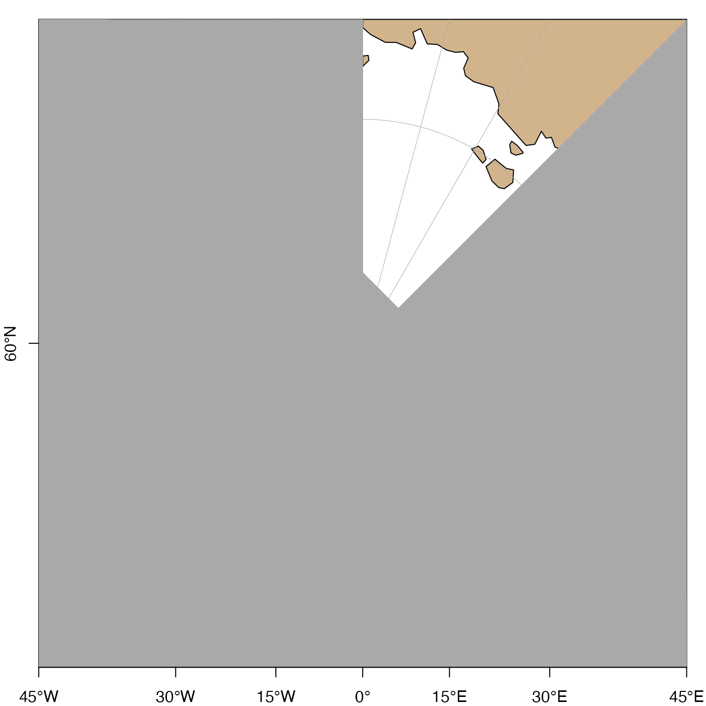

Plot axis labels on an existing map.
This is an advanced function, requiring
coordination with mapPlot() and (possibly) also with mapGrid(),
and so it is best avoided by novices, who may be satisfied
with the defaults used by mapPlot().
Usage
mapAxis(
side = 1:2,
longitude = TRUE,
latitude = TRUE,
axisStyle = 1,
tick = TRUE,
line = NA,
pos = NA,
outer = FALSE,
font = NA,
las = c(0, 0),
lty = "solid",
lwd = 1,
lwd.ticks = lwd,
col = NULL,
col.ticks = NULL,
hadj = NA,
padj = NA,
tcl = -0.3,
cex.axis = 1,
mgp = c(0, 0.5, 0),
debug = getOption("oceDebug")
)Arguments
- side
the side at which labels are to be drawn. If not provided, sides 1 and 2 will be used (i.e. bottom and left-hand sides).
- longitude
either a logical value or a numeric vector of longitudes. There are three possible cases: (1) If
longitude=TRUE(the default) then ticks and nearby numbers will occur at the longitude grid established by the previous call tomapPlot(); (2) iflongitude=FALSEthen no longitude ticks or numbers are drawn; (3) iflongitudeis a vector of numerical values, then those ticks are placed at those values, and numbers are written beside them. Note that in cases 1 and 3, efforts are made to avoid overdrawing text, so some longitude values might get ticks but not numbers. To get ticks but not numbers, setcex.axis=0.- latitude
similar to
longitudebut for latitude.- axisStyle
an integer specifying the style of labels for the numbers on axes. The choices are: 1 for signed numbers without additional labels; 2 (the default) for unsigned numbers followed by letters indicating the hemisphere; 3 for signed numbers followed by a degree sign; 4 for unsigned numbers followed by a degree sign; and 5 for signed numbers followed by a degree sign and letters indicating the hemisphere.
- tick
parameter passed to
axis().- line
parameter passed to
axis().- pos
parameter passed to
axis().- outer
parameter passed to
axis().- font
axis font, passed to
axis().- las
two-element axis label orientation, passed to
axis(). The first value is for the horizontal axis, and the second is for the vertical axis. Seepar()for the meanings of the permitted values, namely 0, 1, 2 and 3.- lty
axis line type, passed to
axis().- lwd
axis line width, passed to
axis()).- lwd.ticks
tick line width, passed to
axis().- col
axis color, passed to
axis().- col.ticks
axis tick color, passed to
axis().- hadj
an argument that is transmitted to
axis().- padj
an argument that is transmitted to
axis().- tcl
axis-tick size (see
par()).- cex.axis
axis-label expansion factor (see
par()); set to 0 to prevent numbers from being placed in axes.- mgp
three-element numerical vector describing axis-label placement (see
par()). It usually makes sense to set the first and third elements to zero.- debug
a flag that turns on debugging. Set to 1 to get a moderate amount of debugging information, or to 2 to get more.
See also
A map must first have been created with mapPlot().
Other functions related to maps:
formatPosition(),
lonlat2map(),
lonlat2utm(),
map2lonlat(),
mapArrows(),
mapContour(),
mapCoordinateSystem(),
mapDirectionField(),
mapGrid(),
mapImage(),
mapLines(),
mapLocator(),
mapLongitudeLatitudeXY(),
mapPlot(),
mapPoints(),
mapPolygon(),
mapScalebar(),
mapText(),
mapTissot(),
oceCRS(),
oceProject(),
shiftLongitude(),
usrLonLat(),
utm2lonlat()
Examples
# \donttest{
library(oce)
data(coastlineWorld)
par(mar = c(2, 2, 1, 1))
lonlim <- c(-180, 180)
latlim <- c(70, 110)
# In mapPlot() call, note axes and grid args, to
# prevent over-plotting of defaults. Some adjustments
# might be required to the mapGrid() arguments, to
# get agreement with the axis. This is why both
# mapGrid() and mapAxis() are best avoided; it is
# simpler to let mapPlot() handle these things.
mapPlot(coastlineWorld,
projection = "+proj=stere +lat_0=90",
longitudelim = lonlim, latitudelim = latlim,
col = "tan", axes = FALSE, grid = FALSE
)
mapGrid(15, 15)
mapAxis(axisStyle = 5)

# }